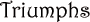
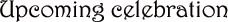
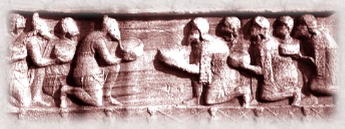

 A triumph is given to an emperor in celebration of his victory in war. When an emperor receives a triumph, he enters the city in a chariot drawn by four horses, followed by trumpeters, carriages bearing the spoils of war, oxen to be sacrificed, and captives in chains. Following him is the victorious general, crowned with laurel, and his children and friends. The general's soldiers bring up the rear, cheering and singing. The Hippodrome was the site of the recent execution of the leader of the Bogomils. These heretics, who claim to be Christians, belong to a sect that believes that God had two sons, Christ and the devil, and that the devil made all worldly things. They reject most of the Old Testament. In the last few years, the Emperor has begun to purge the political body of these evil spirits, offering them the choice of salvation or death by fire.  May 11: Annual celebration of the founding of the City. Women, as usual, are expected to protect their honor and the honor of their families by remaining at home. Quadriga races, free food for the poor. Emperor Alexius Comnenus will preside.  Alexius Comnenus was granted the imperial crown in 1081. He has labored ceaselessly to restore the glory of the Empire in Europe and in Asia. He even invited Western Christians to help him recover lands of the empire from the infidel Turks. Although the Westerners helped him recover Nicaea in 1097, they seized Antioch for themselves in 1098. |